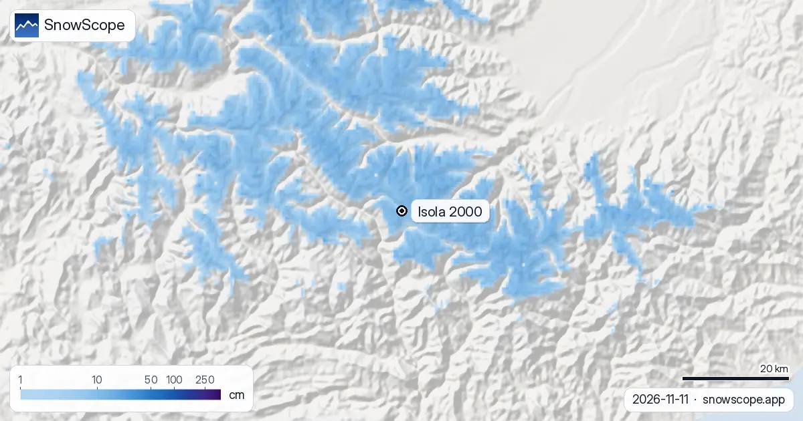

Isola 2000, mapa de pistas: dónde está la nieve en la estación (12 de noviembre de 2026)
Este es el mapa de pistas de Isola 2000 tal como lo ve nuestro modelo de nieve el 11 de noviembre: una primera capa blanca en la cima a 2601 m (9 cm), 7 cm a media montaña (2214 m) y 2 cm en la base (1828 m). Casi todo cayó en los últimos siete días, 31 cm en la cima, y la semana que viene añade unos 26 cm allí arriba. Poco, pero la temporada empieza a dibujar sus líneas.
Consulta la previsión de nieve en tiempo real de Isola 2000 en la app SnowScopeEspesor de nieve, alertas de nieve polvo y mapa 3D, gratis.
La estación sobre el mapa
Isola 2000 es una estación creada de cero en el Mercantour, en los Alpes Marítimos, muy cerca de la frontera italiana. Los remontes salen del frente de nieve sobre el pueblo y se abren en tres sectores: Pelevos, las laderas centrales sobre la estación donde empiezan los principiantes; Saint-Sauveur, la vertiente de pistas entre bosque y campos de baches que gusta a los esquiadores expertos; y Lombarde, el sector soleado orientado al sur que sube hacia el col de la Lombarde y la frontera italiana, con el telesilla Mené para las pistas más empinadas.
En nuestro mapa, la estación cartografiada suma 55 km de pistas y 20 remontes entre 1828 m y 2601 m (cifras de OpenSkiMap, no las de la estación). La chincheta del mapa de nieve está sobre el pueblo; el azul al norte y al este es el alto Mercantour, el gris al sur, el valle del Tinée.

La nieve de hoy, altura por altura
La pasada del modelo del 11 de noviembre da 2 cm en la base, 7 cm a media montaña y 9 cm en la cima. En los dos últimos días no cayó nada, pero la semana anterior fue movida: 19 cm en la base, 27 cm a media montaña y 31 cm en la cima.
Previsión para los próximos siete días: 2 cm en la base, 18 cm a media montaña y 26 cm en la cima, con 3 cm ya en las próximas 24 horas. Son valores del modelo para la zona, no las medidas de la estación, y el sol de noviembre se lleva su parte de cada centímetro.
¿Es poco para mediados de noviembre?
No mucho. En la mitad de nuestros 46 inviernos pasados (1980-81 a 2025-26), la primera nieve en la cima de Isola 2000 se posa el 30 de octubre, a media montaña el 8 de noviembre y en la base el 13 de noviembre: el calendario se cumple más o menos.
Un diciembre habitual tiene 14 cm en la base, 23 cm a media montaña y 43 cm en la cima; la estación alcanza su máximo en febrero, con 35 cm, 53 cm y 95 cm. El máximo de un invierno medio vale 46 cm en la base, 68 cm a media montaña y 128 cm en la cima. El invierno pasado llegó a 51, 76 y 140 cm.
Leer el mapa antes del viaje
El sector Lombarde, orientado al sur, recibe el sol: su nieve se ablanda primero; Saint-Sauveur conserva mejor la capa entre los árboles. La mejor semana para 50 cm o más en la cima es la semana 11, a mediados de marzo, que el 83 % de los inviernos pasados ofreció, con un espesor medio de 97 cm. Abra el mapa en directo, haga zoom en Isola 2000 y las tres alturas se actualizan con cada pasada del modelo.
Consejos para esquiadores
- Mire primero las cifras de la cima y de media montaña: la base a 1828 m suele ponerse blanca una o dos semanas después.
- Un mapa de nieve no es el estado de los remontes: la estación decide cuándo giran.
- Tras una nevada, lea el boletín de aludes de Météo-France antes de salir de las pistas balizadas.
Más mapas (sitios externos)
Referencias y créditos
- Isola 2000, web oficial y mapa de pistas www.isola2000.com/
- Météo-France, meteorología de montaña y boletines de aludes meteofrance.com/meteo-montagne
Sobre estas cifras
Cifras de nieve: el modelo de nieve de SnowScope, pasada del 11 de noviembre de 2026, a tres alturas de la estación (valores del modelo para la zona, no medidas de la estación), y nuestro histórico de nieve, 46 inviernos pasados (1980-81 a 2025-26), un modelo del pasado corregido por altitud. Distribución de la estación: el mapa de pistas de la estación (referencia abajo); longitud de pistas y número de remontes de la cartografía OpenSkiMap. Las previsiones cambian: mire el mapa antes de salir.
Boletines oficiales de aludes: Météo-France – Bulletin d'estimation du risque d'avalanche
Citar este informe
Para investigación, docencia o prensa: cifras y gráficos reutilizables libremente bajo CC BY 4.0 con esta cita.
SnowScope (2026), Isola 2000, mapa de pistas: dónde está la nieve en la estación (12 de noviembre de 2026), https://snowscope.app/blog/es/2026/11/isola-2000-ski-map-snow-12-november-2026.html, consultado el 2026-11-12
SnowScope (Atlas Labs). (2026, November 12). Isola 2000, mapa de pistas: dónde está la nieve en la estación (12 de noviembre de 2026). SnowScope snow reports. https://snowscope.app/blog/es/2026/11/isola-2000-ski-map-snow-12-november-2026.html
BibTeX
@misc{snowscope2026isola2000skimapsnow12nov,
author = {{SnowScope (Atlas Labs)}},
title = {Isola 2000, mapa de pistas: dónde está la nieve en la estación (12 de noviembre de 2026)},
year = {2026},
month = nov,
howpublished = {\url{https://snowscope.app/blog/es/2026/11/isola-2000-ski-map-snow-12-november-2026.html}},
note = {Published 2026-11-12 07:43 UTC; accessed 2026-11-12}
}· CC BY 4.0 · Métodos, datos y herramientas →
Isola 2000: nieve y temperatura según la altura, este invierno vs el pasado (herramientas) →
Sigue Isola 2000
Gratis: un aviso cuando llega la nieve y la previsión cada mañana.
Más partes de nieve

En 24 de 46 inviernos, las estaciones de la vertiente italiana y del sur de los Alpes franceses tuvieron un invierno relativamente mejor que la vertiente norte. El gráfico, los grandes años y el tiempo que hubo detrás.

Artesina recibió 44 cm de nieve nueva en las últimas 72 horas. Ahora tiene unos 20 cm en las pistas altas, según nuestro modelo de nieve.

Un plan barato de 3 días en el lago de Como en diciembre con precios reales 2026-27: trenes, barcos, funicular y esquí en Piani di Bobbio o Madesimo, lo que ahorras frente a Cortina y la probabilidad de nieve en Navidad.